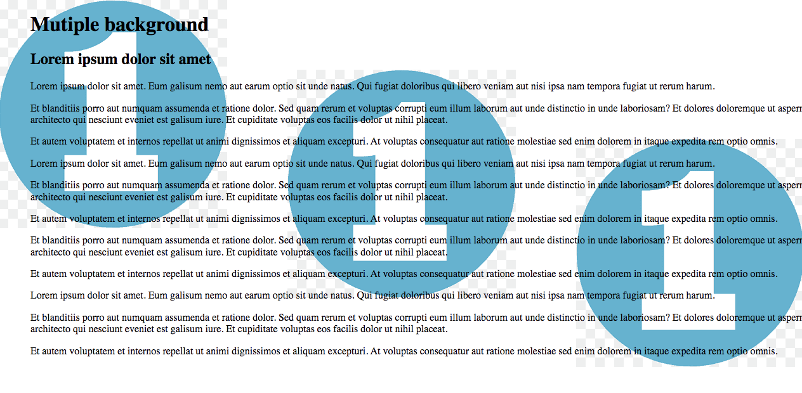

When I think about the highlights of my CSS learning journey, one thing that stands out is the CSS box model, this could help visualize how elements are structured on a webpage. Learning about the content, padding, border, and margin of each box taught me the importance of paying attention to even the smallest details in design.
Another exciting discovery was Flexbox. The flexibility of Flexbox allowed me to easily create responsive layouts that adapt to different screen sizes. Aligning and distributing elements within a container became a breeze and provided so much more possibilities in terms of design creativity. However, I’m still practicing this technique since I think it could get complicated.
And then there's CSS Grid, which allowed my layout skills to the next level. Grid layouts gave me the power to create intricate, multi-dimensional designs with precision. I could divide the page into rows and columns, placing elements exactly where I wanted them.
One thing I learned from the book which i think it’s also interesting is that you can apply multiple background images to a single element and have images positioned in a certain location, so I decided to give it a try and here’s my result!
